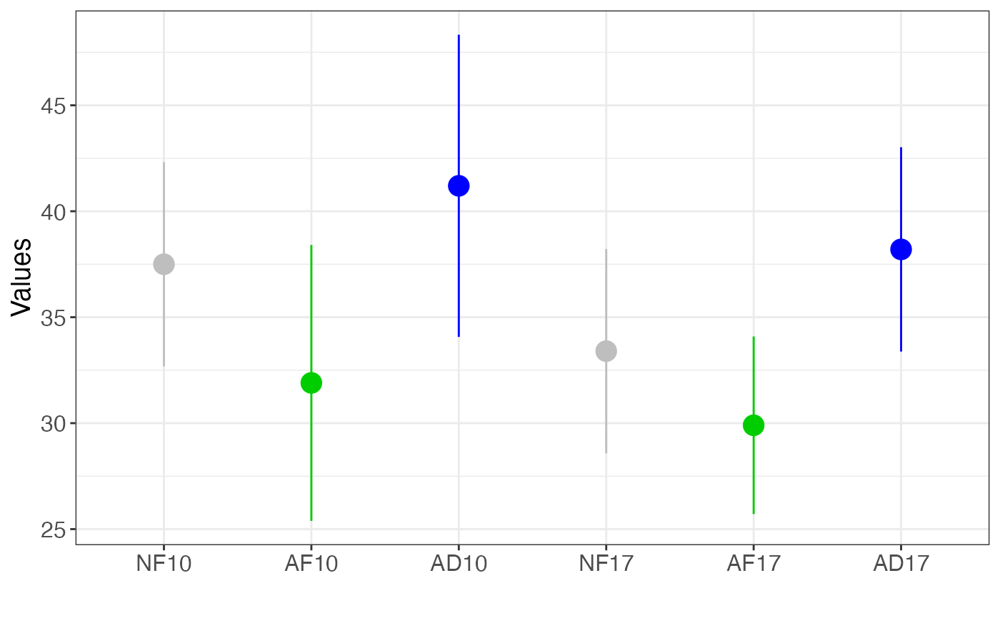
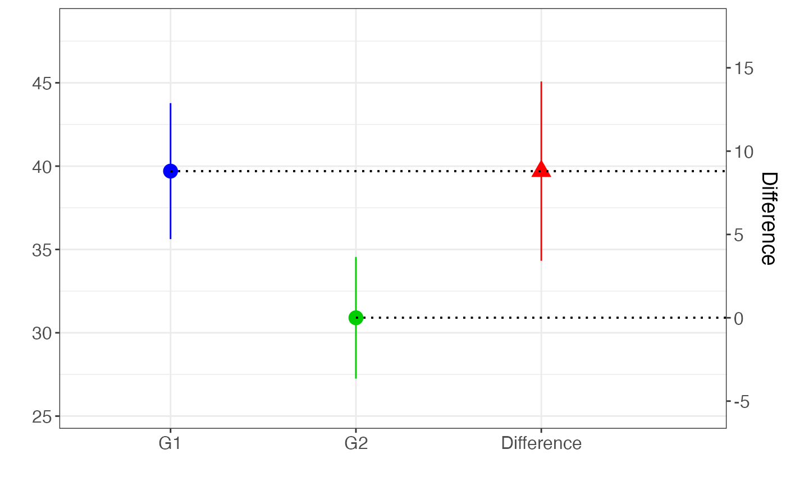

It plots all the samples with their confidence intervals (CI), and in addition it plots the contrasts between the selected samples.
Usage
NewStats_contrasts(
dat,
g1,
g2,
conf.level = 0.95,
col.g1 = "blue",
col.g2 = "green3",
col.diff = "red",
ylab = "Values",
ylab.diff = "Difference",
B.labels = c("G1", "G2", "Difference")
)Arguments
- dat
Data frame of the samples with mean, standard deviation, sample size, and sample id
- g1
Samples for group 1
- g2
Samples for group 2
- conf.level
Confidence level for the interval (Default is 0.95)
- col.g1
Color to use for group 1
- col.g2
Color to use for group 2
- col.diff
Color to use for the difference
- ylab
Label for the y-axis
- ylab.diff
Label for the secondary y-axis for the difference
- B.labels
Labels to use for plot B of the difference between groups
Value
A ggplot objects list with the plot of the samples and the plot of the difference between groups
References
Cumming, G. & Calin-Jageman, R.J. (2017). Introduction to the New Statistics: Estimation, Open Science, and Beyond. New York: Routledge.
See also
Other statistics:
NewStats_2samples(),
R_crit(),
Spearman_crit(),
ci_chisq(),
pval_chisq()
Examples
dat = data.frame(mean = c(37.5,31.9,41.2,33.4,29.9,38.2),
sd = c(10,13.5,14.8,10,8.7,10),
n = c(19,19,19,19,19,19),
grp = c('NF10','AF10','AD10','NF17','AF17','AD17'))
NewStats_contrasts(dat, g1 = c('AD10', 'AD17'), g2 = c('AF10', 'AF17'))
#> [[1]]

#>
#> [[2]]
#> Warning: All aesthetics have length 1, but the data has 3 rows.
#> ℹ Please consider using `annotate()` or provide this layer with data containing
#> a single row.
#> Warning: All aesthetics have length 1, but the data has 3 rows.
#> ℹ Please consider using `annotate()` or provide this layer with data containing
#> a single row.

#>